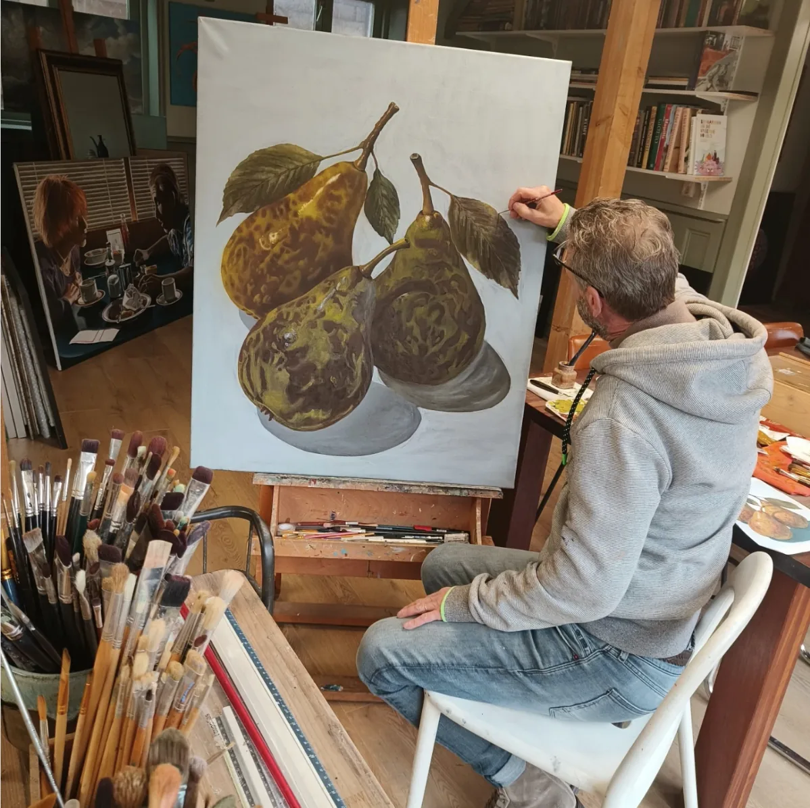
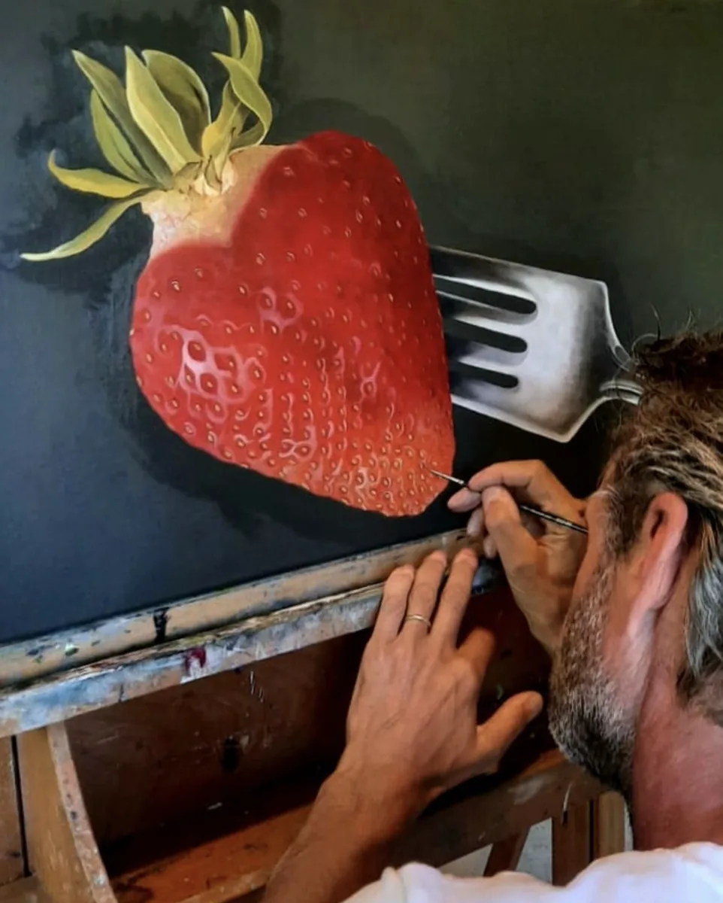

Atelier aan huis · op afspraak
Haarlem, 1962 · Realistisch werk in olieverf
Het stille leven van alledaagse dingen
Stillevens en landschappen, geschilderd in olieverf in het atelier aan huis. Te bezichtigen en te koop — uitsluitend op afspraak.
Uitgelicht
Recent beschikbaar werk

Over Ron
Autodidact, sinds 2004
elke week in de leer
"Inspiratie gebeurt eigenlijk door van alles. Kortom: inspiratie is onuitputtelijk."
Ron Linthoudt
Ron Linthoudt (Haarlem, 1962) tekent en schildert al van kleins af aan. Na een abstracte periode in de jaren '90, waarin hij met acrylverf werkte, lukte het hem niet om zijn gevoel over te brengen op het doek. De overstap naar olieverf bracht wat hij zocht — en achteraf bleek hij vooral een realistische schilder te zijn.
Als autodidactisch schilder kwam hij in 2004 terecht bij galerie 'Huis ter Hart', waar hij tot op de dag van vandaag schilderlessen volgt.
Bezichtiging
In olieverf komt het pas echt tot leven
Een foto op een scherm doet geen recht aan de verf. Bezoekers zijn welkom in het atelier om het werk in het echt te zien. Er is geen webshop — elk schilderij wordt eerst samen bekeken.
Afspraak maken